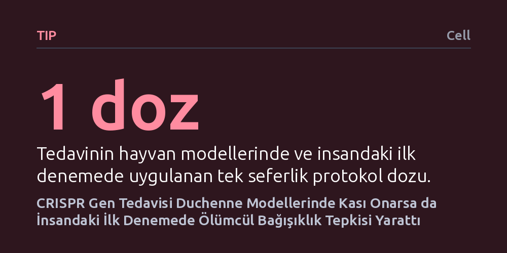

TIP · Cell · 2026-10-27
Araştırmacılar, Duchenne kas distrofisini tek doz AAV-CRISPR gen tedavisiyle düzeltmeyi hedefleyerek hayvan ve insan denemeleri yürüttü. Tedavi fare ve primatlarda kası başarıyla onarırken, insandaki ilk denemede dokuda moleküler düzelme sağlansa da doza bağlı ölümcül bağışıklık komplikasyonu görüldü.
Gen düzenleme laboratuvar hayvanlarında umut verse de, insan vücuduna yüksek dozda virüs vektörü vermenin ölümcül bağışıklık riskleri taşıdığını ve güvenlik sınırlarının henüz yeterli olmadığını gösteriyor.

Duchenne kas distrofisi, kas liflerinin sağlamlığını koruyan distrofin proteininin genetik bir mutasyon nedeniyle üretilememesiyle ortaya çıkan, ilerleyici ve ağır bir kas erimesi hastalığıdır. Hastalar çocukluk çağından itibaren yürüme yetisini kaybetmekte ve ilerleyen yaşlarda solunum veya kalp yetmezliği riskiyle karşılaşmaktadır. Uzun yıllardır uygulanan tedaviler hastalığın gidişatını yalnızca yavaşlatabilmiş, kökte yatan genetik bozukluğu düzeltememiştir.
Bu durum araştırmacıları, sorunu doğrudan DNA seviyesinde çözebilecek gen düzenleme yöntemlerine yöneltmiştir. Temel soru, laboratuvarda geliştirilen moleküler bir gen makasının hastanın kas dokusuna güvenle ulaştırılıp ulaştırılamayacağı ve vücutta kalıcı bir iyileşme sağlayıp sağlayamayacağıdır. Ancak genetik düzeltmenin başarısı kadar, tedaviyi hücrelere taşımak için kullanılan virüslerin bağışıklık sistemi üzerinde yaratacağı etkiler de kritik bir bilinmezlik barındırmaktadır.
Araştırma ekibi, hedef hücreye ulaşabilmek için adeno-ilişkili virüs (AAV) kapsüllerine yüklenmiş CRISPR gen düzenleme mekanizmasını kullandı. Deneylerin ilk aşamasında, insan distrofin genini taşıyacak şekilde genetik yapısı değiştirilmiş fare modellerine tek doz tedavi verildi. Bu aşamada temel amaç, kas liflerinde hedeflenen DNA düzenlemesinin gerçekleşip gerçekleşmediğini ve fonksiyonel distrofin üretiminin yeniden başlayıp başlamadığını gözlemlemekti.
Preklinik çalışmanın bir sonraki kritik basamağında, insana biyolojik olarak daha yakın olan insan dışı primat modelleri incelendi. Primatlara uygulanan tek dozluk tedavinin ardından araştırmacılar, gen düzenlemenin uzun süre kalıcı olup olmadığını ve hayvanların bu dozu tolere edip edemediğini takip etti. Elde edilen güven verici verilerin ardından, tedavinin etkinliğini ve sınırlarını görmek amacıyla ilk kez bir Duchenne hastasının dahil edildiği klinik aşamaya geçildi.
Hayvan deneylerinden elde edilen sonuçlar umut vericiydi; insanlaştırılmış farelerde distrofin proteini yeniden üretilmeye başlandı ve primatlarda yönetilebilir bir güvenlik profiliyle kalıcı bir gen düzenlemesi sağlandı. İnsandaki ilk denemede de kas dokusundan alınan biyopsiler, genetik düzeyde hedeflenen kesim ve düzenlemenin moleküler olarak gerçekten gerçekleştiğini doğruladı. Bu bulgu, teknolojinin insan kas dokusunda işlev görebildiğini kanıtladı.
Ne var ki moleküler düzeydeki bu başarı, hastanın vücudunda ortaya çıkan çok ağır bir tabloyla gölgelendi. Tedavi sonrasında hastada doza bağlı olarak gelişen şiddetli bir bağışıklık tepkisi tetiklendi ve bu komplikasyon ne yazık ki ölümle sonuçlandı. Hayvan modellerinde yönetilebilir görünen bağışıklık yanıtı, insanda kontrol edilemeyen ve hayati organları tehdit eden yıkıcı bir sürece dönüştü.
Bu çalışma, gen düzenleme araçlarının insan vücudunda doku onarımı yapabildiğini göstermekle birlikte, sistemik olarak damardan verilen yüksek miktardaki viral taşıyıcıların oluşturduğu tehlikeyi çok açık biçimde ortaya koydu. Yazarlar, mevcut tablonun "sistemik AAV-CRISPR tedavilerinin güvenlik sınırını genişletme ihtiyacını" acil bir gereklilik haline getirdiğini vurgulamaktadır. Yani sorun DNA'yı kesen makasın kendisinden çok, o makası vücuda taşımak için kullanılan aracın bağışıklık sistemiyle girdiği tehlikeli etkileşimdir.
Sonuç olarak, Duchenne ve benzeri genetik hastalıklarda gen düzenleme tedavisinin güvenle uygulanabilmesi için yeni nesil dağıtım yöntemlerine ihtiyaç duyulmaktadır. Virüs dozlarını düşürecek daha hedefli taşıyıcılar geliştirilmeden ya da bağışıklık tepkisini önleyecek daha etkin koruma mekanizmaları bulunmadan, sistemik CRISPR tedavilerinin yaygın bir klinik çözüme dönüşmesi mümkün görünmemektedir.